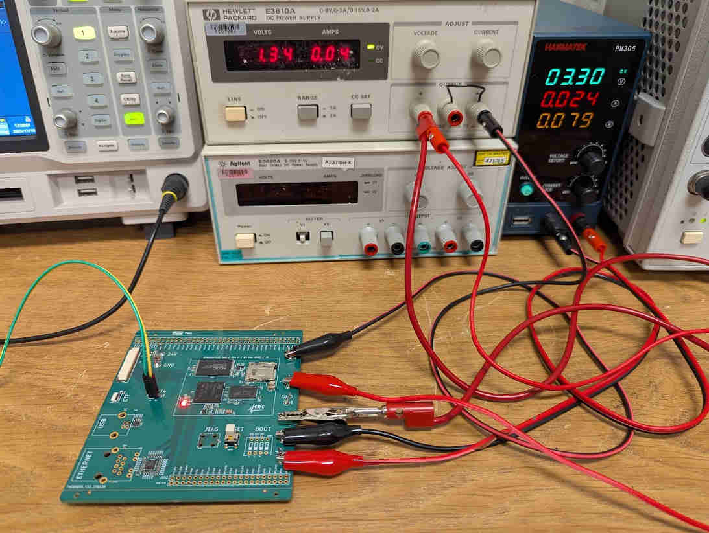

Limitation is the only way to get anything done. The less one aims to do, the more gets done. By the time the aim becomes to do nothing at all, everything is accomplished.
On a practical level, trying to do too many things at once results in not having enough time for any single one of them. Thus the paradox: the less one is trying to do, the more gets done. At any rate, it’s impossible to do more than one thing at a time. The closer one approaches to the ideal of unity, the more efficient the work becomes. Distraction is dissipation; limitation is focus.
This is not a moral statement but a practical one: limitations free your energy for what matters.

This article is also available as a Jupyter notebook.
Previously we have explored how to flash the STM32MP135 using the STM32CubeProg over USB and remained puzzled why we need 1.5G of code just to transfer some serial data. Here, we will flash the chip by talking to the built-in ROM bootloader over UART with a couple lines of Python, as explained in an ST app note[1]. The article is in three sections: (1) define the communication functions, (2) use them on the evaluation board, (3) use them on a custom board.
This section documents how the STM32MP1 ROM bootloader communicates over UART, including the supported commands, packet formats, checksum rules, and Python helper functions used to implement the protocol. Skip to the next section to see how these functions are used.
The supported commands are listed below:
def interp_cmd(b):
if b == 0x00:
return "Get"
elif b == 0x01:
return "Get Version"
elif b == 0x02:
return "Get ID"
elif b == 0x03:
return "Get phase"
elif b == 0x11:
return "Read Memory"
elif b == 0x12:
return "Read Partition"
elif b == 0x21:
return "Start (Go)"
elif b == 0x31:
return "Download (Write Memory)"
else:
return "???"All communications from STM32CubeProgrammer (PC) to the device are verified as follows:
The UART/USART even parity is checked.
For each command the host sends a byte and its complement (XOR = 0x00).
The device performs a checksum on the sent/received datablocks. A byte containing the computed XOR of all previous bytes is appended at the end of each communication (checksum byte). By XORing all received bytes, data + checksum, the result at the end of the packet must be 0x00. A timeout must be managed in any waiting loop to avoid any blocking situation.
def pack_cmd(cmd):
if cmd not in [0x00, 0x01, 0x02, 0x03, 0x11, 0x12, 0x21, 0x31]:
raise RuntimeError("Invalid cmd requested.")
# command followed by its complement
return struct.pack("BB", cmd, 0xff-cmd)Each command packet is either accepted (ACK answer), discarded (NACK answer) or aborted (unrecoverable error):
def interp_byte(b):
if b == 0x79:
return "ACK"
elif b == 0x1F:
return "NACK"
elif b == 0x5F:
return "ABORT"
else:
return format(b, ‘#04x’)
def get_ack(note=""):
r = mp1.read_bytes(1)[0]
print(f"{format(r, ‘#04x’)}\t\t{interp_byte(r)}{note}")
if interp_byte(r) != "ACK":
raise RuntimeError("Did not receive ACK.")Once the serial boot mode is entered (boot pins set to 000), all the UART/USART
instances are scanned by the ROM code, monitoring for each instance the
USARTx_RX line pin, waiting to receive the 0x7F data frame (one start bit,
0x7F data bits, none parity bit and one stop bit).
def uart_init():
mp1.write_raw(struct.pack("B", 0x7F))
get_ack(note="")The Get command returns the bootloader version and the supported commands. When the device receives the Get command, it transmits the version and the supported command codes to the host. The commands not supported are removed from the list.
def get():
# Get command
mp1.write_raw(pack_cmd(0x00))
# Response: ACK
get_ack()
# Response: number of following bytes – 1
num_bytes = mp1.read_bytes(1)[0]
if num_bytes >= 0:
print(f"{format(num_bytes, ‘#04x’)}\t\t{num_bytes} + 1 bytes to follow")
else:
print(f"{format(num_bytes, ‘#04x’)}")
raise RuntimeError("Did not receive number of bytes to follow.")
# Response: Bootloader version
r = mp1.read_bytes(1)[0]
print(f"{format(r, ‘#04x’)}\t\tversion {int(hex(0x10)[2:])/10}")
# Response: device ID
for i in range(num_bytes):
r = mp1.read_bytes(1)[0]
print(f"{format(num_bytes, ‘#04x’)}\t\tcmd = {interp_cmd(r)}")
# Response: ACK
get_ack()The Get version command is used to get the version of the running component. When the device receives the command, it transmits the version to the host.
def get_version():
# Get version command
mp1.write_raw(pack_cmd(0x01))
# Response: ACK
get_ack()
# Response: Bootloader version
r = mp1.read_bytes(1)[0]
print(f"{format(r, ‘#04x’)}\t\tversion {int(hex(0x10)[2:])/10}")
# Response: Option byte 1
r = mp1.read_bytes(1)[0]
print(f"{format(r, ‘#04x’)}\t\tOption byte 1")
# Response: Option byte 2
r = mp1.read_bytes(1)[0]
print(f"{format(r, ‘#04x’)}\t\tOption byte 2")
# Response: ACK
get_ack()The Get ID command is used to get the version of the device ID (identification). When the device receives the command, it transmits the device ID to the host.
def get_id():
# Get ID command
mp1.write_raw(pack_cmd(0x02))
# Response: ACK
get_ack()
# Response: number of following bytes – 1
r = mp1.read_bytes(1)[0]
if r >= 0:
print(f"{format(r, ‘#04x’)}\t\t{r} + 1 bytes to follow")
else:
print(f"{format(r, ‘#04x’)}")
raise RuntimeError("Did not receive number of bytes to follow.")
# Response: device ID
r = mp1.read_bytes(2)
if r == b‘\x05\x00’:
print(format(r[0], ‘#04x’), format(r[1], ‘#04x’), "\tSTM32MP15x")
elif r == b‘\x05\x01’:
print(format(r[0], ‘#04x’), format(r[1], ‘#04x’), "\tSTM32MP13x")
else:
print(format(r[0], ‘#04x’), format(r[1], ‘#04x’))
raise RuntimeError("Did not receive device ID.")
# Response: ACK
get_ack()The Get phase command enables the host to get the phase ID, in order to identify the next partition that is going to be downloaded.
The download address, when present, provides the destination address in memory. A value of 0xFFFFFFFF means than the partition is going to be written in NVM.
Phase ID = 0xFF corresponds to an answered value Reset, in this case the information bytes provide the cause of the error in a string just before executing the reset.
The ROM code sends phase = TF-A
Byte 1: ACK
Byte 2 N = 6
Byte 3: phase ID (file containing FSBL = TF-A, 1)
Byte 4-7: 0x2FFC2400 on STM32MP15x, 0x2FFDFE00 on STM32MP13x
Byte 8: X = 1
Byte 9: 0: reserved
Byte 10: ACKdef get_phase():
# Get phase command
mp1.write_raw(pack_cmd(0x03))
# Response: ACK
get_ack()
# Response: number of following bytes – 1
r = mp1.read_bytes(1)[0]
if r >= 0:
print(f"{format(r, ‘#04x’)}\t\t{r} + 1 bytes to follow")
else:
print(f"{format(r, ‘#04x’)}")
raise RuntimeError("Did not receive number of bytes to follow.")
# Response: phase ID
r = mp1.read_bytes(1)[0]
print(f"{format(r, ‘#04x’)}\t\tPhase ID")
# Response: download address
r = mp1.read_bytes(4)
print(format(r[3], ‘#04x’), end=‘’)
print(format(r[2], ‘02x’), end=‘’)
print(format(r[1], ‘02x’), end=‘’)
print(format(r[0], ‘02x’), end=‘’)
print("\tDownload address")
# Response: number of additional bytes
r = mp1.read_bytes(1)[0]
print(f"{format(r, ‘#04x’)}\t\t{r} additional bytes following")
# Response: reserved
r = mp1.read_bytes(1)[0]
print(f"{format(r, ‘#04x’)}\t\t{r} Reserved")
# Response: ACK
get_ack()The download command is used to download a binary code (image) into the SRAM memory or to write a partition in NVM.
Two types of operations are available:
Normal operation: download current partition binary to the device. For
initialization phase the partitions are loaded in SRAM, otherwise for writing phase the partition are written in NVM.
Special operation: download non-signed data to non-executable memory space
A Start command is necessary to finalize these operations after the download command.
The Packet number is used to specify the type of operation and the number of the current packet. The table below gives the description of the packet number.
| Byte | Value | Description |
|---|---|---|
| 3 | 0x00 | Normal operation: write in current phase |
| . | 0xF2 | Special operation: OTP write |
| . | 0xF3 | Special operation: Reserved |
| . | 0xF4 | Special operation PMIC: NVM write |
| . | Others | Reserved |
| 0-2 | — | Packet number, increasing from 0 to 0xFFFFFF |
Packet number it is not an address as on STM32 MCU with only memory mapped flash, but the index of the received packet. The offset of the packet N the offset in the current partition/phase is N times 256 bytes when only full packets are used.
def download(num, data):
# Data sanity check
print(f"Packet number {num} of length {len(data)}:")
if len(data) > 256:
raise RuntimeError("Too much data to send.")
# Send "Download" command
mp1.write_raw(pack_cmd(0x31))
# Response: ACK
get_ack(" command")
# Packet number
i0 = (num >> 0*8) & 0xff
i1 = (num >> 1*8) & 0xff
i2 = (num >> 2*8) & 0xff
mp1.write_raw(struct.pack("BBBB", 0x00, i2, i1, i0))
# Checksum byte: XOR (byte 3 to byte 6)
mp1.write_raw(struct.pack("B", i2 ^ i1 ^ i0))
# Response: ACK
get_ack(" packet number")
# Packet size (0 < N < 255)
mp1.write_raw(struct.pack("B", len(data) - 1))
# N-1 data bytes
for d in data:
mp1.write_raw(struct.pack("B", d))
# Checksum byte: XOR (byte 8 to Last-1)
checksum = len(data) - 1
for d in data:
checksum ^= d
mp1.write_raw(struct.pack("B", checksum))
# Response: ACK
get_ack(" data")The Read memory command is used to read data from any valid memory address in the system memory.
When the device receives the read memory command, it transmits the ACK byte to the application. After the transmission of the ACK byte, the device waits for an address (4 bytes) and a checksum byte, then it checks the received address. If the address is valid and the checksum is correct, the device transmits an ACK byte, otherwise it transmits a NACK byte and aborts the command.
When the address is valid and the checksum is correct, the device waits for N (N = number of bytes to be received -1) and for its complemented byte (checksum). If the checksum is correct the device transmits the needed data (N+1 bytes) to the application, starting from the received address. If the checksum is not correct, it sends a NACK before aborting the command.
def read_memory(addr, num_bytes):
print("Note: read memory command not supported by ROM code STM32MP13x.")
# Data sanity check
if num_bytes > 256:
raise RuntimeError("Too much data to receive.")
# Send "Read memory" command
mp1.write_raw(pack_cmd(0x11))
# Response: ACK
get_ack(" command")
# Start address
i0 = (addr >> 0*8) & 0xff
i1 = (addr >> 1*8) & 0xff
i2 = (addr >> 2*8) & 0xff
mp1.write_raw(struct.pack("BBBB", 0x00, i2, i1, i0))
# Checksum byte: XOR (byte 3 to byte 6)
mp1.write_raw(struct.pack("B", i2 ^ i1 ^ i0))
# Response: ACK
get_ack(" start address")
# Number of bytes to be received – 1 (N = [0, 255])
# (also Checksum byte: XOR)
mp1.write_raw(pack_cmd(num_bytes - 1))
# Response: ACK
get_ack(" number of bytes")The Start command is used:
To execute the code just downloaded in the memory or any other code by
branching to an address specified by the application. When the device receives the Start command, it transmits the ACK byte to the application. If the address is valid the device transmits an ACK byte and jumps to this address, otherwise it transmits a NACK byte and aborts the command.
To finalize the last download command, when the host indicates the address =
0xFFFFFFFF.
def start(addr):
# Send "Start" command
mp1.write_raw(pack_cmd(0x21))
# Response: ACK
get_ack(" command")
# Start address
i0 = (addr >> 0*8) & 0xff
i1 = (addr >> 1*8) & 0xff
i2 = (addr >> 2*8) & 0xff
i3 = (addr >> 3*8) & 0xff
mp1.write_raw(struct.pack("BBBB", i3, i2, i1, i0))
# Checksum byte: XOR (byte 3 to byte 6)
mp1.write_raw(struct.pack("B", i3 ^ i2 ^ i1 ^ i0))
# Response: ACK
get_ack(" address")To download a complete file:
def down_file(fname=‘tf-a-stm32mp135f-dk.stm32’):
# size of each chunk (must be <= 256 bytes)
sz = 256
# open file with the bitstream
with open(fname, ‘rb’) as f:
fb = f.read()
# split file into this many chunks
num_chunks = int(np.ceil(len(fb) / sz))
# send each chunk one by one
for i in tqdm(range(num_chunks)):
chunk = fb[i*sz : (i+1)*sz]
download(i, chunk)
# necessary to finalize download
start(0xFFFFFFFF)We simply run the functions one after the other and verify that the output printed matches what’s shown here.
As an example, we will use the Blink program that we develop, compile, and package in this repo.
>>> uart_init()
0x79 ACK
>>> get()
0x79 ACK
0x06 6 + 1 bytes to follow
0x40 version 1.0
0x06 cmd = Get
0x06 cmd = Get Version
0x06 cmd = Get ID
0x06 cmd = Get phase
0x06 cmd = Start (Go)
0x06 cmd = Download (Write Memory)
0x79 ACK
>>> get_version()
0x79 ACK
0x10 version 1.0
0x00 Option byte 1
0x00 Option byte 2
0x79 ACK
>>> get_id()
0x79 ACK
0x01 1 + 1 bytes to follow
0x05 0x01 STM32MP13x
0x79 ACK
>>> get_phase()
0x79 ACK
0x06 6 + 1 bytes to follow
0x01 Phase ID
0x2ffdfe00 Download address
0x01 1 additional bytes following
0x00 0 Reserved
0x79 ACK
>>> down_file(fname=’blink.stm32’)
Packet number 0 of length 256:
0x79 ACK command
0x79 ACK packet number
0x79 ACK data
...
(skip over lots of packets)
...
Packet number 264 of length 156:
0x79 ACK command
0x79 ACK packet number
0x79 ACK data
0x79 ACK command
0x79 ACK addressAfter a little bit, the red LED on the evaluation board will blink. Success!
Amazingly, the exact same procedure works on any custom board, so long as it breaks out the UART4 pin and applies 3.3V and 1.35V power supplies in the correct sequence. Find the schematics and layout files for my board in this repository.
Since the custom board does not use STPMIC1, the code for the blink example is even simpler. Find it here.
The UART wires (green/yellow) and the two power supplies is all that needs to be connected, and then the red LED (middle of the PCB) will blink. Yes, the setup is that simple!

For the past month I had been stuck hunting down subtle bugs that happen when a particular sequence of commands is entered into a program. Sometimes even repeating the exact sequence would not be enough to reproduce the bug, since the program’s behavior depends on all commands that have been entered before as well as some saved state. Such chaos is to be expected when the user commands that a program exposes each modify one or more global state variables.
The wizards of functional programming counsel us to use pure functions only, i.e., those whose output depends only on their inputs and that don’t change anything else in the system. That style of coding would have fixed my bugs, but is strictly speaking impossible. If no function modifies any global state, then how can it return values? The return values get passed back via the call stack, which is of course part of the global state and influences the execution of functions that follow. Even ignoring that, ultimately the program needs to output the values to the user or manipulate the hardware in some way, which is also part of the global state.
The real solution indicated in this case is of the type “if you can’t beat them, you join them”. If you cannot have perfectly pure functions, then you should have functions that are perfectly impure. In other words, functions that mutate the global state to the largest extent possible.
In the example from the first paragraphs, my program exposed a range of user commands: some change system parameters, and others work on one of several similar output channels of an instrument. The intuitive but buggy approach is for each command to change only the things it needs to change. The “perfectly impure” approach is to recompute the entire global state no matter how small the change that the command actually needs to make.
This results in a tremendous simplification of the possible parameter space. For every set of user-visible parameter values, there is only one possible state the system or program can be in. Contrast that to the intuitive/buggy approach where there is an almost infinite number of system states corresponding to a given set of parameters!
But isn’t this awfully inefficient? If an instrument has ten outputs, and each output has 25 parameters, then to change one parameter would take 250 times longer than it needs to! Not really. If all user commands eventually call the same function to effect a parameter change, that one function can do the optimization to not modify things that haven’t changed. In other words, instead of having to perform the optimization manually in each user-facing command, the optimization is done at the last possible moment in a single function automatically. For a reasonably complex program, it’s nearly impossible to manually keep track of this kind of “cache consistency”, but pretty easy to do automatically as described here.
The actual result regarding the mysterious bugs I spent a month chasing? They were all gone, replaced by relatively shallow issues that were easy to reproduce and quick to fix. Besides, once I implemented the “inefficient” approach of updating the whole state on each command, the system became faster and more responsive, since the automatic optimization did a much better job than my bug-prone manual ones.
If all your activities are about fixing problems, filling needs, and resolving pain, then your life requires problems, needs, pain, and conflict. If instead you pursue things meaningful in themselves, with an intrinsic joy, then the good life is more easily achieved.
Move from a reactive mindset (“What needs fixing?”) to a generative one (“What do I love creating?”).

In a probabilistic world, it is unreasonable to expect any one thing to succeed. At most, you can hope that of the several that were attempted, at least one will turn out as expected. That’s the genetic algorithm: try a countless number of things, and remember which ones work and which ones don’t.
There’s nothing personal about things that fail—or, for that matter, those that succeed. It is just the unfolding of a complex system, so better not be attached to any one outcome.
Success and failure are signals, not verdicts on your worth.